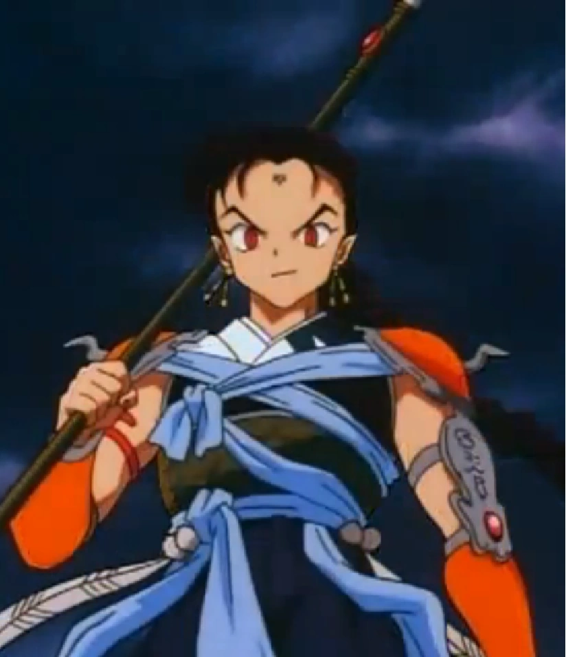

Lunafera
Acordei de madrugada, minha visão estava turva e não conseguia ver direito o que tinha no meu quarto, somente a luz da janela junto aos sons de trovões, que estranhamente clareavam bastante os céus, ao mesmo tempo em que escutava meus pais discutindo na sala de estar, por meu pai estar dias e dias dentro de seu laboratório obcecado por uma experiência enquanto as contas da casa estavam ficando pendentes, resolvi levantar e olhar pela janela, onde conseguia ver parte da cidade por estar no quarto andar da cidade, a lua estava estranha, e tinha não havia sinal de chuva, mas raios e trovões de sobra, e quando olhei pra baixo, havia alguém com muitas roupas passando por ali, uma sombra que me deu calafrios, não consegui ver nada, através dessas sombra, então resolvi sair do quarto para ver como estavam meus pais.
Descendo as escadas, consegui ver que os dois estavam em um clima pesado da discussão. O ar estava tenso e as palavras trocadas eram cheias de frustração. Minha mãe gesticulava com raiva, enquanto meu pai mantinha uma expressão exausta, como se o peso do mundo estivesse sobre seus ombros.
"Você não entende, Carla," disse meu pai, com voz embargada. "Estou tão perto de uma descoberta que pode mudar tudo!"
"Mas a que custo, Roberto?" Minha mãe retrucou, os olhos brilhando de lágrimas. "Estamos à beira de perder a casa, e nossos filhos estão sofrendo com sua ausência. Você está obcecado! E mais do que isso, você prometeu a ela uma vida melhor, um lar estável. Não é justo com ela!"
"O que você quer que eu faça?" Meu pai exclamou, sua voz ecoando pela casa. "Desista agora, quando estou tão perto? E quanto ao que prometi a você e à nossa filha adotiva? É por ela que estou fazendo isso!"
Decidi não intervir e continuei descendo as escadas devagar, tentando não fazer barulho. A discussão deles parecia algo fora do meu alcance, mas a figura que eu vi pela janela ainda estava na minha mente. Quem seria aquela pessoa, e por que ela me causou tanto medo?
Cheguei à sala de estar e me escondi atrás da porta, observando meus pais. A tempestade lá fora parecia refletir a turbulência dentro da nossa casa. De repente, um clarão iluminou a sala e, por um momento, vi algo que me gelou a espinha. A sombra que eu tinha visto do meu quarto estava agora projetada na janela da sala, maior e mais sinistra do que antes.
"Eu... eu ouvi vocês discutindo," gaguejei, apontando para a janela. "E vi algo lá fora."
Meus pais trocaram um olhar preocupado e, por um momento, esqueceram a discussão. Meu pai se aproximou da janela e olhou para fora, franzindo a testa.
"Não tem nada aqui, só a tempestade," ele disse, tentando me tranquilizar. "Provavelmente foi só sua imaginação."
Mas eu sabia que não era. Havia algo mais acontecendo, algo que não entendíamos. A tempestade lá fora era anormal, e a figura que eu vi não parecia ser apenas uma coincidência. Senti um calafrio percorrer minha espinha novamente.
"Pai, você disse que está perto de uma descoberta," eu comecei, hesitante. "Pode me dizer o que é?"
Meu pai suspirou, passando a mão pelos cabelos desgrenhados. "É complicado, filha. Estou trabalhando em algo que pode revolucionar a forma como entendemos a energia e o clima. Mas ainda é experimental, e preciso de mais tempo."
"Talvez... talvez a tempestade lá fora tenha a ver com a sua experiência," sugeri, as palavras saindo antes que eu pudesse pensar nelas. "E se algo deu errado?"
Meus pais ficaram em silêncio, considerando minhas palavras. Meu pai finalmente falou, a voz baixa e preocupada. "É uma possibilidade. Preciso voltar ao laboratório para verificar."
De repente, um estrondo ensurdecedor sacudiu a casa, e todas as luzes se apagaram. Fiquei paralisado de medo, agarrando a mão da minha mãe. O pânico era palpável.
"Todos para o porão, agora!" Meu pai ordenou, pegando uma lanterna e nos guiando pelas escadas. A tempestade parecia estar diretamente sobre nós, e cada relâmpago iluminava a casa de uma forma assustadora.
Enquanto ele tentava abrir a porta, a sombra que eu vi lá fora voltou à minha mente. Quem ou o que era aquilo?

De repente uma luz toma o lugar, e a parede é totalmente quebrada. Foi uma serie de raios que atingiu nossa casa, e quando olho para fora um ser maligno com uma lança que parecia um samurai ancestral, estava irradiando raios, e destruindo não só minha casa, mas também as outras da rua, é como se os raios saíssem dele, sem nem ele se esforçar, os gritos das pessoas na rua era evidente, minha mãe se desesperou ao ver que meu pai estava desacordado com pedaços da parede prendendo o braço dele, então pegou minha mão e me puxou para longe dali, até a gente perceber que ele estava nos seguindo, eu e minha mãe paramos em um beco, onde conseguimos nos esconder por um tempo.
Depois de alguns minutos minha mãe olha pra mim, pega nas minhas mãos e começa recitar palavras em latim, eu vejo um circulo brilhante em volta de nós e ela pede pra eu ficar ali, no beco. Ela corre dali pra buscar o papai quando antes de virar a esquina do beco pra rua a lança daquele monstro do raio atravessa o peito da minha mãe, eu vi lentamente a lagrima saindo do rosto dela antes de morrer, eu não consegui segurar meu choro, simplesmente me ajoelhei e chorei, quando vi com meus olhos embaçados aquele cara dos raios puxando sem dó a lança da minha mãe, e ela caindo mole no chão, ele olhava pra mim gargalhando, e eu só conseguia sentir um grande ódio vindo de dentro de mim, eu não só assisti minha mãe morrendo e nem sei se meu pai está vivo, quando de repente apareceu uma mulher na minha frente, com roupas pretas, e longos cabelos cor de sangue, e disse.
-”Criatura horrível”
ele ainda gargalhando disse:
-”muito prazer, sou Ichido, Lunafera do trovão.”